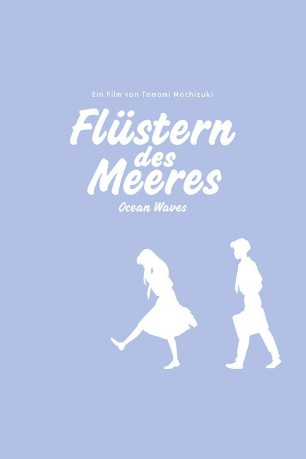

gesehen am 09.01.2017
gesehen am 09.01.2017Alternativ: Ocean Waves (Englischer Titel) gesehen am 09.01.2017
 
 IMDB-Wertung: 6.9 / 10
IMDB-Wertung: 6.9 / 10  Metascore:
Metascore: 
Die beiden Schüler Taku und Yutaka sind beste Freunde und gemeinsam drücken sie auch die Schulbank in der kleinen Stadt Kochi. Eines Tages kommt ein attraktives Mädchen namens Rikako aus der Großstadt nach Kochi, um dort die Highschool weiter zu besuchen. Bereits nach kurzer Zeit ist sie die Klassenbeste, allerdings wird sie wegen ihrer arroganten Art von den übrigen Mädchen ausgeschlossen. Yutaka findet dennoch Gefallen an ihr und verliebt sich in sie. Als jedoch das Gerücht umgeht, dass Taku und Rikako ein Paar sind, wird die Freundschaft der Beiden auf eine harte Probe gestellt. Flüstern des Meeres - Ocean Waves gibt einen kleinen Einblick in das Alltagsleben von japanischen Jugendlichen und zeigt mit viel Gefühl den manchmal mühsamen Weg des Erwachsenwerdens
Jahr: 1993
Dauer: 72 Minuten
FSK: 0
Land: Japan Studio: Optimum AsiaTonspuren:
Untertitel: Deutsch,
Auflösung: 1080p (1920x1040) Größe: 4894 MB
Genre: Drama, Animation/Trick, Liebe
Regisseur: Tomomi Mochizuki
Drehbuch: Ramin Bahrani
Soundtrack:
Darsteller:
 Tomokazu Seki als Minarai
Tomokazu Seki als Minarai Sumi Shimamoto als Additional Voices
Sumi Shimamoto als Additional VoicesDatei: X:\Kinder Anime\Studio Ghibli\Flüstern des Meeres - Ocean Waves (1993, FSK0, 1920x1040).mkv seit 23.08.2016
Festplatte: Kinder-Filme+Trick
 Es gibt insgesamt 27 Filme in der Gruppe 'Kinder Anime\Studio Ghibli'
Es gibt insgesamt 27 Filme in der Gruppe 'Kinder Anime\Studio Ghibli'